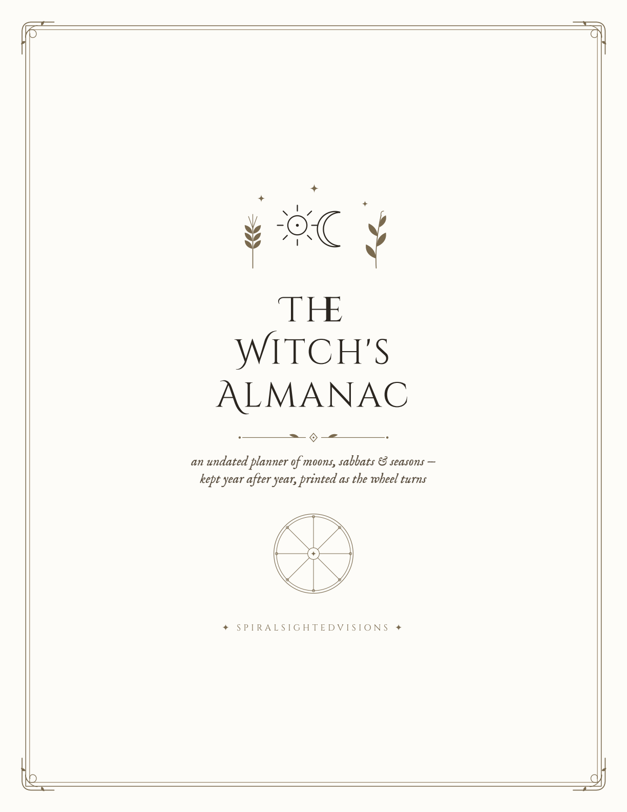

Printable · US Letter + A4
The Witch's Almanac
the undated witch’s planner — sabbats, moons & seasons, forever



Instant Download
✦ spiralsightedvisions ✦
Printable · US Letter + A4
the undated witch’s planner — sabbats, moons & seasons, forever

Instant Download
✦ spiralsightedvisions ✦